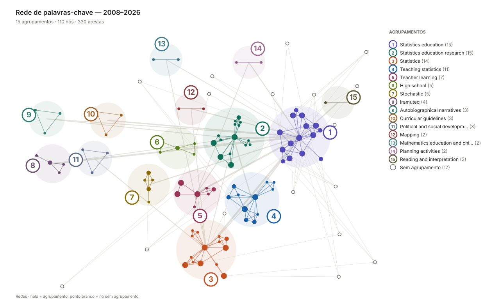
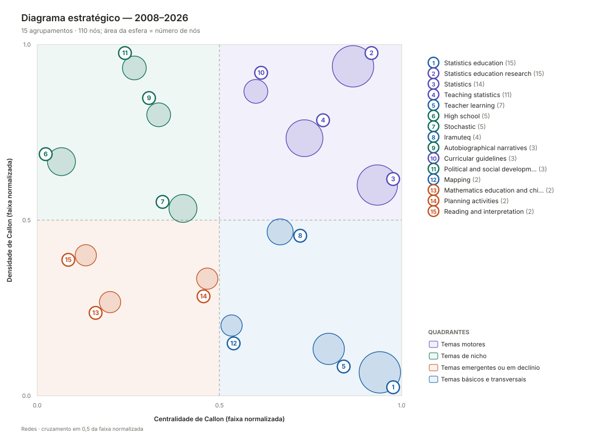

Análise
Escolha os parâmetros e execute uma configuração ou a grade completa.
Período completo · 2008–2026
Palavras
Co-ocorrência
Equivalência
Centros simples
−1+
2 – 15
15 agrupamentos ·
110 nós ·
330 arestas ·
centralidade média 28,6
Rede
Diagrama estratégico
Agrupamentos
Índices
Documentos
Comparar períodosExportar TSV
Rede em halos

−+⤢
Densidade média 71,8
Arestas 330
Componentes 1
Maior halo 15
Diagrama estratégico

−+
Motores 4
Nicho 4
Básicos 4
Emergentes 3
Agrupamentos
Ver os 15 grupos →| Selo | Agrupamento | Itens | Centralidade | Densidade | Quadrante |
|---|---|---|---|---|---|
| 1 | STATISTICS-EDUCATION | 15 | 163,1 | 34,8 | Básico |
| 2 | STATISTICS-EDUCATION-RESEARCH | 15 | 44,2 | 107,1 | Motor |
| 3 | STATISTICS | 14 | 49,6 | 77,9 | Motor |
| 4 | TEACHING-STATISTICS | 11 | 36,3 | 90,2 | Motor |
| 5 | TEACHER-LEARNING | 7 | 40,2 | 50,0 | Básico |
| 6 | HIGH-SCHOOL | 5 | 0,8 | 80,0 | Nicho |
| 7 | STOCHASTIC | 5 | 12,1 | 75,0 | Nicho |
Quadrantes pela mediana das faixas normalizadas de centralidade e densidade de Callon.